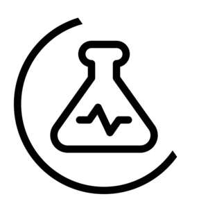
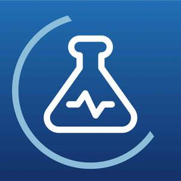
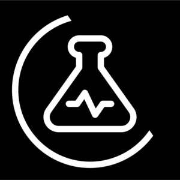

Trade Mark Journal No.2025/027 4 July 2025
UK00004224401 25 June 2025 (5,9,10,35,42,44)
Mark 1

Mark 2

Mark 3

- Class 5
- Preparations and substances for the alleviation of snoring, sleep apnoea and for the reduction in noise associated with snoring; pharmaceutical products and preparations; sanitary preparations; saline solutions; nasal sprays; throat sprays; plasters.
- Class 9
- Downloadable software applications for mobile devices; downloadable computer application software for mobile devices; downloadable computer software for use on handheld mobile digital electronic devices and other consumer electronics; software for processing images, graphics, audio, video and text; downloadable software in the nature of a mobile application for detecting and recording sounds; downloadable software applications for mobile devices for the monitoring, measuring, recognition, tracking, reporting, diagnosing, treating and analysis of sleep, sleep habits, sleep patterns, sleep quality, sleep environment, physiological signals, breathing, breathing patterns, snoring patterns, respiratory health, respiratory conditions, sleep apnea, health, wellbeing, snoring and breathing disturbances, including bruxism, jaw clenching, restless leg syndrome, sleep-related movement disorders, sleep-related breathing disorders, sleep-related hypoventilation and sleep-related hypoxemia disorder; downloadable computer application software for mobile devices for the monitoring, measuring, recognition, tracking, reporting, diagnosing, treating and analysis of sleep, sleep habits, sleep patterns, sleep quality, sleep environment, physiological signals, breathing, breathing patterns, snoring patterns, respiratory health, respiratory conditions, sleep apnea, health, wellbeing, snoring and breathing disturbances, including bruxism, jaw clenching, restless leg syndrome, sleep-related movement disorders, sleep-related breathing disorders, sleep-related hypoventilation and sleep-related hypoxemia disorder; downloadable computer software for use on handheld mobile digital electronic devices and other consumer electronics for the monitoring, measuring, recognition, tracking, reporting, diagnosing, treating and analysis of sleep, sleep habits, sleep patterns, sleep quality, sleep environment, physiological signals, breathing, breathing patterns, snoring patterns, respiratory health, respiratory conditions, sleep apnea, health, wellbeing, snoring and breathing disturbances, including bruxism, jaw clenching, restless leg syndrome, sleep-related movement disorders, sleep-related breathing disorders, sleep-related hypoventilation and sleep-related hypoxemia disorder; downloadable software for processing images, graphics, audio, video and text for the monitoring, measuring, recognition, tracking, reporting, diagnosing, treating and analysis of sleep, sleep habits, sleep patterns, sleep quality, sleep environment, physiological signals, breathing, breathing patterns, snoring patterns, respiratory health, respiratory conditions, sleep apnea, health, wellbeing, snoring and breathing disturbances, including bruxism, jaw clenching, restless leg syndrome, sleep-related movement disorders, sleep-related breathing disorders, sleep-related hypoventilation and sleep-related hypoxemia disorder; downloadable software in the nature of a mobile application for detecting and recording sounds for the monitoring, measuring, recognition, tracking, reporting, diagnosing, treating and analysis of sleep, sleep habits, sleep patterns, sleep quality, sleep environment, physiological signals, breathing, breathing patterns, snoring patterns, respiratory health, respiratory conditions, sleep apnea, health, wellbeing, snoring and breathing disturbances, including bruxism, jaw clenching, restless leg syndrome, sleep-related movement disorders, sleep-related breathing disorders, sleep-related hypoventilation and sleep-related hypoxemia disorder; downloadable software applications for mobile devices for the monitoring, measuring, recognition, tracking, reporting, diagnosing, treating and analysis of data concerning sleep, sleep habits, sleep patterns, sleep quality, sleep environment, physiological signals, breathing, breathing patterns, snoring patterns, respiratory health, respiratory conditions, sleep apnea, health, wellbeing, snoring and breathing disturbances, including bruxism, jaw clenching, restless leg syndrome, sleep-related movement disorders, sleep-related breathing disorders, sleep-related hypoventilation and sleep-related hypoxemia disorder; downloadable computer application software for mobile devices for the monitoring, measuring, recognition, tracking, reporting, diagnosing, treating and analysis of data concerning sleep, sleep habits, sleep patterns, sleep quality, sleep environment, physiological signals, breathing, breathing patterns, snoring patterns, respiratory health, respiratory conditions, sleep apnea, health, wellbeing, snoring and breathing disturbances, including bruxism, jaw clenching, restless leg syndrome, sleep-related movement disorders, sleep-related breathing disorders, sleep-related hypoventilation and sleep-related hypoxemia disorder; downloadable computer software for use on handheld mobile digital electronic devices and other consumer electronics for the monitoring, measuring, recognition, tracking, reporting, diagnosing, treating and analysis of data concerning sleep, sleep habits, sleep patterns, sleep quality, sleep environment, physiological signals, breathing, breathing patterns, snoring patterns, respiratory health, respiratory conditions, sleep apnea, health, wellbeing, snoring and breathing disturbances, including bruxism, jaw clenching, restless leg syndrome, sleep-related movement disorders, sleep-related breathing disorders, sleep-related hypoventilation and sleep-related hypoxemia disorder; downloadable software for processing images, graphics, audio, video and text for the monitoring, measuring, recognition, tracking, reporting, diagnosing, treating and analysis of data concerning sleep, sleep habits, sleep patterns, sleep quality, sleep environment, physiological signals, breathing, breathing patterns, snoring patterns, respiratory health, respiratory conditions, sleep apnea, health, wellbeing, snoring and breathing disturbances, including bruxism, jaw clenching, restless leg syndrome, sleep-related movement disorders, sleep-related breathing disorders, sleep-related hypoventilation and sleep-related hypoxemia disorder; downloadable software in the nature of a mobile application for detecting and recording sounds for the monitoring, measuring, recognition, tracking, reporting, diagnosing, treating and analysis of data concerning sleep, sleep habits, sleep patterns, sleep quality, sleep environment, physiological signals, breathing, breathing patterns, snoring patterns, respiratory health, respiratory conditions, sleep apnea, health, wellbeing, snoring and breathing disturbances, including bruxism, jaw clenching, restless leg syndrome, sleep-related movement disorders, sleep-related breathing disorders, sleep-related hypoventilation and sleep-related hypoxemia disorder; Artificial intelligence and machine learning software; human machine interface software and artificial intelligence software; medical and health software and artificial intelligence software; Artificial intelligence and machine learning software for the monitoring, measuring, recognition, tracking, reporting, diagnosing, treating and analysis of sleep, sleep habits, sleep patterns, sleep quality, sleep environment, physiological signals, breathing, breathing patterns, snoring patterns, respiratory health, respiratory conditions, sleep apnea, health, wellbeing, snoring and breathing disturbances, including bruxism, jaw clenching, restless leg syndrome, sleep-related movement disorders, sleep-related breathing disorders, sleep-related hypoventilation and sleep-related hypoxemia disorder; human machine interface software and artificial intelligence software for the monitoring, measuring, recognition, tracking, reporting, diagnosing, treating and analysis of sleep, sleep habits, sleep patterns, sleep quality, sleep environment, physiological signals, breathing, breathing patterns, snoring patterns, respiratory health, respiratory conditions, sleep apnea, health, wellbeing, snoring and breathing disturbances, including bruxism, jaw clenching, restless leg syndrome, sleep-related movement disorders, sleep-related breathing disorders, sleep-related hypoventilation and sleep-related hypoxemia disorder; medical and health software and artificial intelligence software for the monitoring, measuring, recognition, tracking, reporting, diagnosing, treating and analysis of sleep, sleep habits, sleep patterns, sleep quality, sleep environment, physiological signals, breathing, breathing patterns, snoring patterns, respiratory health, respiratory conditions, sleep apnea, health, wellbeing, snoring and breathing disturbances, including bruxism, jaw clenching, restless leg syndrome, sleep-related movement disorders, sleep-related breathing disorders, sleep-related hypoventilation and sleep-related hypoxemia disorder; Artificial intelligence and machine learning software for the monitoring, measuring, recognition, tracking, reporting, diagnosing, treating and analysis of data concerning sleep, sleep habits, sleep patterns, sleep quality, sleep environment, physiological signals, breathing, breathing patterns, snoring patterns, respiratory health, respiratory conditions, sleep apnea, health, wellbeing, snoring and breathing disturbances, including bruxism, jaw clenching, restless leg syndrome, sleep-related movement disorders, sleep-related breathing disorders, sleep-related hypoventilation and sleep-related hypoxemia disorder; human machine interface software and artificial intelligence software for the monitoring, measuring, recognition, tracking, reporting, diagnosing, treating and analysis of data concerning sleep, sleep habits, sleep patterns, sleep quality, sleep environment, physiological signals, breathing, breathing patterns, snoring patterns, respiratory health, respiratory conditions, sleep apnea, health, wellbeing, snoring and breathing disturbances, including bruxism, jaw clenching, restless leg syndrome, sleep-related movement disorders, sleep-related breathing disorders, sleep-related hypoventilation and sleep-related hypoxemia disorder; medical and health software and artificial intelligence software for the monitoring, measuring, recognition, tracking, reporting, diagnosing, treating and analysis of data concerning sleep, sleep habits, sleep patterns, sleep quality, sleep environment, physiological signals, breathing, breathing patterns, snoring patterns, respiratory health, respiratory conditions, sleep apnea, health, wellbeing, snoring and breathing disturbances, including bruxism, jaw clenching, restless leg syndrome, sleep-related movement disorders, sleep-related breathing disorders, sleep-related hypoventilation and sleep-related hypoxemia disorder.
- Class 10
- Apparatus for use in the prevention of snoring and breathing disturbances, including bruxism, jaw clenching, restless leg syndrome, sleep-related movement disorders, sleep-related breathing disorders, sleep apnea, sleep-related hypoventilation and sleep-related hypoxemia disorder; pads for inhibiting snoring; apparatus for the reduction in noise associated with snoring; surgical and medical apparatus and instruments; external nasal dilators; nasal strips; medical apparatus for assisting breathing; medical, dental and oral devices for diagnosing, treating and monitoring snoring and breathing disturbances, including bruxism, jaw clenching, restless leg syndrome, sleep-related movement disorders, sleep-related breathing disorders, sleep apnea, sleep-related hypoventilation and sleep-related hypoxemia disorder; medical devices for sleep apnoea and for improving air-flow through nasal cavities; apparatus and instruments for the alleviation of snoring conditions; parts and fittings for the aforesaid goods.
- Class 35
- Collating, compilation, processing, systemisation, management, monitoring, measuring, recognition, tracking, reporting, diagnosing, treating and analysis of data; collating, compilation, processing, systemisation, management, monitoring, measuring, recognition, tracking, reporting, diagnosing, treating and analysis of data concerning sleep, sleep habits, sleep patterns, sleep quality, sleep environment, physiological signals, breathing, breathing patterns, snoring patterns, respiratory health, respiratory conditions, sleep apnea, health, wellbeing, snoring and breathing disturbances, including bruxism, jaw clenching, restless leg syndrome, sleep-related movement disorders, sleep-related breathing disorders, sleep-related hypoventilation and sleep-related hypoxemia disorder; Retail store services and online retail store services relating to apparatus for use in the prevention of snoring and breathing disturbances, including bruxism, jaw clenching, restless leg syndrome, sleep-related movement disorders, sleep-related breathing disorders, sleep apnea, sleep-related hypoventilation and sleep-related hypoxemia disorder; retail store services and online retail store services relating to pads for inhibiting snoring; apparatus for the reduction in noise associated with snoring; retail store services and online retail store services relating to surgical and medical apparatus and instruments; retail store services and online retail store services relating to external nasal dilators; retail store services and online retail store services relating to nasal strips; retail store services and online retail store services relating to medical apparatus for assisting breathing; retail store services and online retail store services relating to medical, dental and oral devices for diagnosing, treating and monitoring snoring and breathing disturbances, including bruxism, jaw clenching, restless leg syndrome, sleep-related movement disorders, sleep-related breathing disorders, sleep apnea, sleep-related hypoventilation and sleep-related hypoxemia disorder; retail store services and online retail store services relating to medical devices for sleep apnoea and for improving air-flow through nasal cavities; retail store services and online retail store services relating to apparatus and instruments for the alleviation of snoring conditions; Retail store services and online retail store services relating to preparations and substances for the alleviation of snoring, sleep apnoea and for the reduction in noise associated with snoring; retail store services and online retail store services relating to pharmaceutical products and preparations; retail store services and online retail store services relating to sanitary preparations; retail store services and online retail store services relating to saline solutions, nasal sprays, throat sprays and plasters.
- Class 42
- Software development in the framework of software publishing; providing on-line non-downloadable software applications for mobile devices; providing on-line non-downloadable computer application software for mobile devices; providing on-line non-downloadable computer software for use on handheld mobile digital electronic devices and other consumer electronics; on-line non-downloadable software for processing images, graphics, audio, video and text; providing on-line non-downloadable software in the nature of a mobile application for detecting and recording sounds; providing on-line non-downloadable software applications for mobile devices for the monitoring, measuring, recognition, tracking, reporting, diagnosing, treating and analysis of sleep, sleep habits, sleep patterns, sleep quality, sleep environment, physiological signals, breathing, breathing patterns, snoring patterns, respiratory health, respiratory conditions, sleep apnea, health, wellbeing, snoring and breathing disturbances, including bruxism, jaw clenching, restless leg syndrome, sleep-related movement disorders, sleep-related breathing disorders, sleep-related hypoventilation and sleep-related hypoxemia disorder; providing on-line non-downloadable computer application software for mobile devices for the monitoring, measuring, recognition, tracking, reporting, diagnosing, treating and analysis of sleep, sleep habits, sleep patterns, sleep quality, sleep environment, physiological signals, breathing, breathing patterns, snoring patterns, respiratory health, respiratory conditions, sleep apnea, health, wellbeing, snoring and breathing disturbances, including bruxism, jaw clenching, restless leg syndrome, sleep-related movement disorders, sleep-related breathing disorders, sleep-related hypoventilation and sleep-related hypoxemia disorder; providing on-line non-downloadable computer software for use on handheld mobile digital electronic devices and other consumer electronics for the monitoring, measuring, recognition, tracking, reporting, diagnosing, treating and analysis of sleep, sleep habits, sleep patterns, sleep quality, sleep environment, physiological signals, breathing, breathing patterns, snoring patterns, respiratory health, respiratory conditions, sleep apnea, health, wellbeing, snoring and breathing disturbances, including bruxism, jaw clenching, restless leg syndrome, sleep-related movement disorders, sleep-related breathing disorders, sleep-related hypoventilation and sleep-related hypoxemia disorder; providing on-line non-downloadable software for processing images, graphics, audio, video and text for the monitoring, measuring, recognition, tracking, reporting, diagnosing, treating and analysis of sleep, sleep habits, sleep patterns, sleep quality, sleep environment, physiological signals, breathing, breathing patterns, snoring patterns, respiratory health, respiratory conditions, sleep apnea, health, wellbeing, snoring and breathing disturbances, including bruxism, jaw clenching, restless leg syndrome, sleep-related movement disorders, sleep-related breathing disorders, sleep-related hypoventilation and sleep-related hypoxemia disorder; providing on-line non-downloadable software in the nature of a mobile application for detecting and recording sounds for the monitoring, measuring, recognition, tracking, reporting, diagnosing, treating and analysis of sleep, sleep habits, sleep patterns, sleep quality, sleep environment, physiological signals, breathing, breathing patterns, snoring patterns, respiratory health, respiratory conditions, sleep apnea, health, wellbeing, snoring and breathing disturbances, including bruxism, jaw clenching, restless leg syndrome, sleep-related movement disorders, sleep-related breathing disorders, sleep-related hypoventilation and sleep-related hypoxemia disorder; providing on-line non-downloadable software applications for mobile devices for the monitoring, measuring, recognition, tracking, reporting, diagnosing, treating and analysis of data concerning sleep, sleep habits, sleep patterns, sleep quality, sleep environment, physiological signals, breathing, breathing patterns, snoring patterns, respiratory health, respiratory conditions, sleep apnea, health, wellbeing, snoring and breathing disturbances, including bruxism, jaw clenching, restless leg syndrome, sleep-related movement disorders, sleep-related breathing disorders, sleep-related hypoventilation and sleep-related hypoxemia disorder; providing on-line non-downloadable computer application software for mobile devices for the monitoring, measuring, recognition, tracking, reporting, diagnosing, treating and analysis of data concerning sleep, sleep habits, sleep patterns, sleep quality, sleep environment, physiological signals, breathing, breathing patterns, snoring patterns, respiratory health, respiratory conditions, sleep apnea, health, wellbeing, snoring and breathing disturbances, including bruxism, jaw clenching, restless leg syndrome, sleep-related movement disorders, sleep-related breathing disorders, sleep-related hypoventilation and sleep-related hypoxemia disorder; providing on-line non-downloadable computer software for use on handheld mobile digital electronic devices and other consumer electronics for the monitoring, measuring, recognition, tracking, reporting, diagnosing, treating and analysis of data concerning sleep, sleep habits, sleep patterns, sleep quality, sleep environment, physiological signals, breathing, breathing patterns, snoring patterns, respiratory health, respiratory conditions, sleep apnea, health, wellbeing, snoring and breathing disturbances, including bruxism, jaw clenching, restless leg syndrome, sleep-related movement disorders, sleep-related breathing disorders, sleep-related hypoventilation and sleep-related hypoxemia disorder; providing on-line non-downloadable software for processing images, graphics, audio, video and text for the monitoring, measuring, recognition, tracking, reporting, diagnosing, treating and analysis of data concerning sleep, sleep habits, sleep patterns, sleep quality, sleep environment, physiological signals, breathing, breathing patterns, snoring patterns, respiratory health, respiratory conditions, sleep apnea, health, wellbeing, snoring and breathing disturbances, including bruxism, jaw clenching, restless leg syndrome, sleep-related movement disorders, sleep-related breathing disorders, sleep-related hypoventilation and sleep-related hypoxemia disorder; providing on-line non-downloadable software in the nature of a mobile application for detecting and recording sounds for the monitoring, measuring, recognition, tracking, reporting, diagnosing, treating and analysis of data concerning sleep, sleep habits, sleep patterns, sleep quality, sleep environment, physiological signals, breathing, breathing patterns, snoring patterns, respiratory health, respiratory conditions, sleep apnea, health, wellbeing, snoring and breathing disturbances, including bruxism, jaw clenching, restless leg syndrome, sleep-related movement disorders, sleep-related breathing disorders, sleep-related hypoventilation and sleep-related hypoxemia disorder; Providing on-line non-downloadable artificial intelligence and machine learning software; providing on-line non-downloadable human machine interface software and artificial intelligence software; providing on-line non-downloadable medical and health software and artificial intelligence software; providing on-line non-downloadable artificial intelligence and machine learning software for the monitoring, measuring, recognition, tracking, reporting, diagnosing, treating and analysis of sleep, sleep habits, sleep patterns, sleep quality, sleep environment, physiological signals, breathing, breathing patterns, snoring patterns, respiratory health, respiratory conditions, sleep apnea, health, wellbeing, snoring and breathing disturbances, including bruxism, jaw clenching, restless leg syndrome, sleep-related movement disorders, sleep-related breathing disorders, sleep-related hypoventilation and sleep-related hypoxemia disorder; providing on-line non-downloadable human machine interface software and artificial intelligence software for the monitoring, measuring, recognition, tracking, reporting, diagnosing, treating and analysis of sleep, sleep habits, sleep patterns, sleep quality, sleep environment, physiological signals, breathing, breathing patterns, snoring patterns, respiratory health, respiratory conditions, sleep apnea, health, wellbeing, snoring and breathing disturbances, including bruxism, jaw clenching, restless leg syndrome, sleep-related movement disorders, sleep-related breathing disorders, sleep-related hypoventilation and sleep-related hypoxemia disorder; providing on-line non-downloadable medical and health software and artificial intelligence software for the monitoring, measuring, recognition, tracking, reporting, diagnosing, treating and analysis of sleep, sleep habits, sleep patterns, sleep quality, sleep environment, physiological signals, breathing, breathing patterns, snoring patterns, respiratory health, respiratory conditions, sleep apnea, health, wellbeing, snoring and breathing disturbances, including bruxism, jaw clenching, restless leg syndrome, sleep-related movement disorders, sleep-related breathing disorders, sleep-related hypoventilation and sleep-related hypoxemia disorder; providing on-line non-downloadable artificial intelligence and machine learning software for the monitoring, measuring, recognition, tracking, reporting, diagnosing, treating and analysis of data concerning sleep, sleep habits, sleep patterns, sleep quality, sleep environment, physiological signals, breathing, breathing patterns, snoring patterns, respiratory health, respiratory conditions, sleep apnea, health, wellbeing, snoring and breathing disturbances, including bruxism, jaw clenching, restless leg syndrome, sleep-related movement disorders, sleep-related breathing disorders, sleep-related hypoventilation and sleep-related hypoxemia disorder; providing on-line non-downloadable human machine interface software and artificial intelligence software for the monitoring, measuring, recognition, tracking, reporting, diagnosing, treating and analysis of data concerning sleep, sleep habits, sleep patterns, sleep quality, sleep environment, physiological signals, breathing, breathing patterns, snoring patterns, respiratory health, respiratory conditions, sleep apnea, health, wellbeing, snoring and breathing disturbances, including bruxism, jaw clenching, restless leg syndrome, sleep-related movement disorders, sleep-related breathing disorders, sleep-related hypoventilation and sleep-related hypoxemia disorder; providing on-line non-downloadable medical and health software and artificial intelligence software for the monitoring, measuring, recognition, tracking, reporting, diagnosing, treating and analysis of data concerning sleep, sleep habits, sleep patterns, sleep quality, sleep environment, physiological signals, breathing, breathing patterns, snoring patterns, respiratory health, respiratory conditions, sleep apnea, health, wellbeing, snoring and breathing disturbances, including bruxism, jaw clenching, restless leg syndrome, sleep-related movement disorders, sleep-related breathing disorders, sleep-related hypoventilation and sleep-related hypoxemia disorder.
- Class 44
- Medical services; medical diagnostic services; medical services for the monitoring, measuring, recognition, tracking, reporting, diagnosing, treating and analysis of sleep, sleep habits, sleep patterns, sleep quality, sleep environment, physiological signals, breathing, breathing patterns, snoring patterns, respiratory health, respiratory conditions, sleep apnea, health, wellbeing, snoring and breathing disturbances, including bruxism, jaw clenching, restless leg syndrome, sleep-related movement disorders, sleep-related breathing disorders, sleep-related hypoventilation and sleep-related hypoxemia disorder; medical diagnostic services for the monitoring, measuring, recognition, tracking, reporting, diagnosing, treating and analysis of sleep, sleep habits, sleep patterns, sleep quality, sleep environment, physiological signals, breathing, breathing patterns, snoring patterns, respiratory health, respiratory conditions, sleep apnea, health, wellbeing, snoring and breathing disturbances, including bruxism, jaw clenching, restless leg syndrome, sleep-related movement disorders, sleep-related breathing disorders, sleep-related hypoventilation and sleep-related hypoxemia disorder.
Reviva Softworks Ltd
Representative: Origin Limited